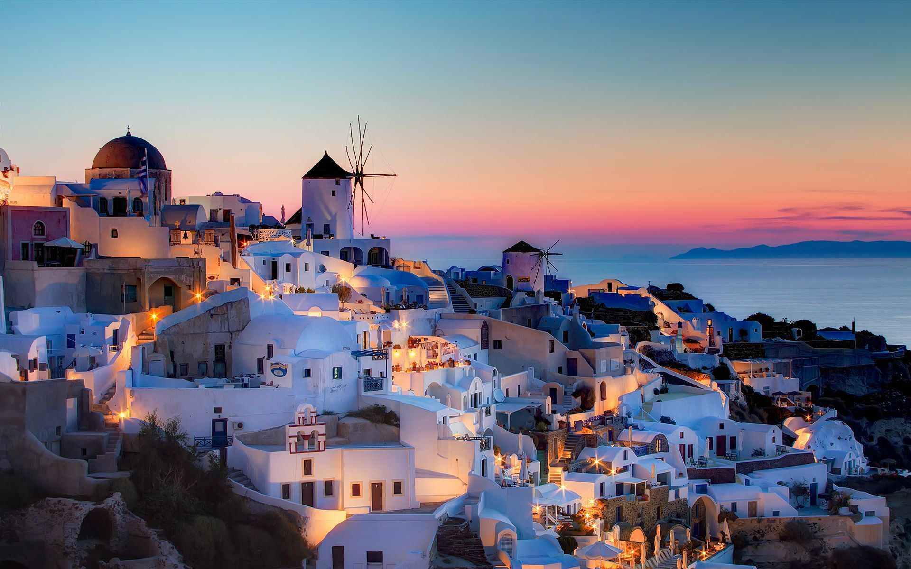
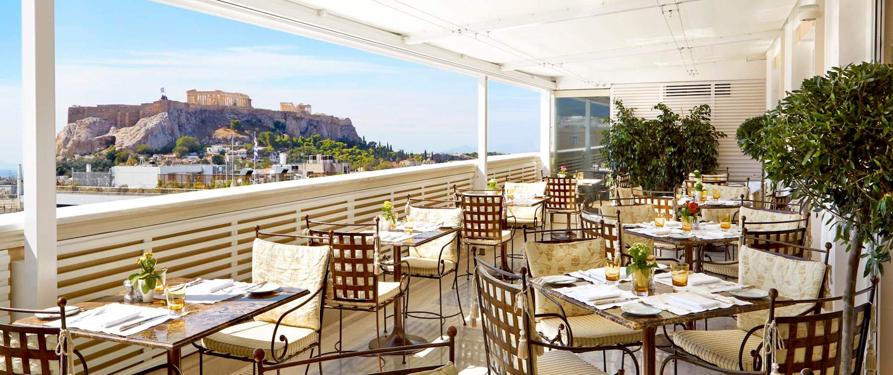
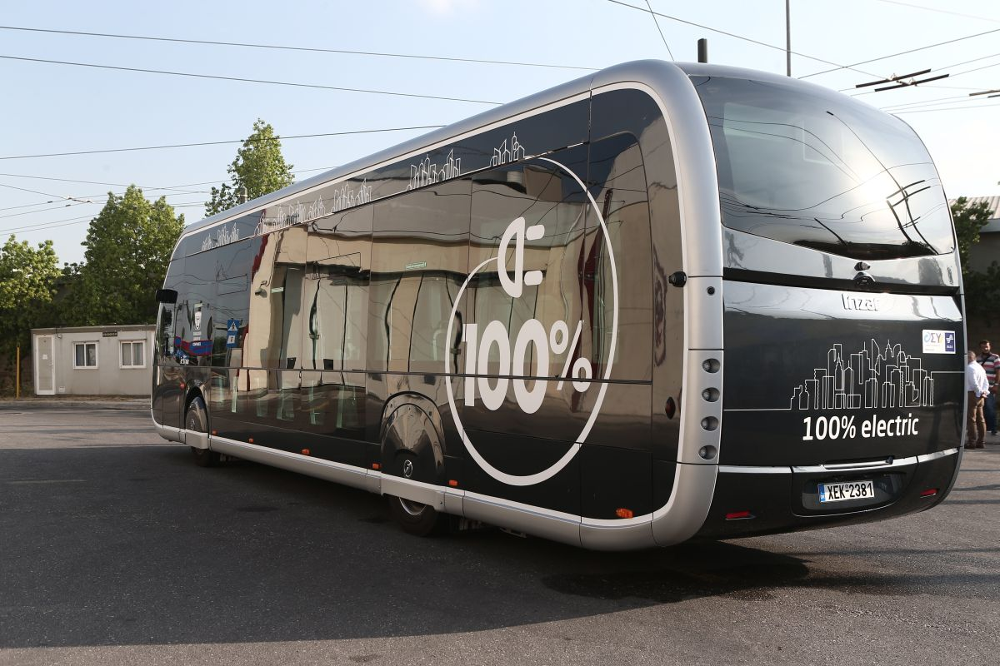

Lieux touristiques
Acropolis, Athens Considérée comme le symbole d'Athènes et de la Grèce, et même
de la civilisation occidentale, l'Acropole est un monticule rocheux se levant
au cœur d'Athènes moderne, couronné par trois temples magnifiques datant du
5ème siècle avant JC.Santorin est la plus spectaculaire de toutes les îles grecques.
Elle est surtout connue pour les villes de Fira et d'Oia, situées au sommet des
falaises de la côte Ouest, qui semblent surplomber une profonde caldeira bleue
remplie de mer. Composé de bâtiments cubiques typiques des Cyclades blanchis à
la chaux, dont beaucoup ont été convertis en hôtels de charme avec
des piscines à débordement.

Hôtels et restaurants
Restaurants en grec dépend de votre poche , la plupart des bons ont besoin de
factures lourdes et voici quelques-uns d'entre eux : Tudor Hall, Lithos
Restaurant, Funky Gourmet.
pour les hôtels grecs ont simplement le meilleur du meilleur , plus vous
obtenez un chic avec un prix décent qui est bien sûr si vous avez quelque
chose à laissé aprait la nourriture.

Transport
Le système de transport public grec se compose de bus KTEL, les services de
train des chemins de fer grecs, les routes de vols intérieurs, des ferries,
et un système de métro athénien complet. Les autobus sont sans doute le moyen
le plus pratique de traverser le continent.